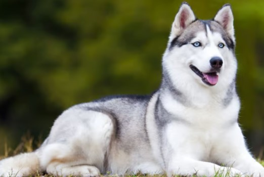

Los Husky no ladran, aúllann
Esta variedad tuvo pocos cruces con otras razas, al estar aislada en una zona concreta durante siglos. Por este motivo, sus genes y los del lobo mantienen cierta cercanía. Esto no significa que sean agresivos, pues al desarrollarse junto al hombre se acostumbraron a la vida doméstica. Sin embargo, mantuvieron esta característica tan lobuna. De hecho, su aullido puede escucharse a 15 kilómetros de distancia.

Descripción:
El perro doméstico, Canis lupus familiaris, es un mamífero carnívoro domesticado hace miles de años, descendiente del lobo gris. Se caracteriza por su gran diversidad de razas, tamaños y temperamentos, adaptándose a diversos roles como compañía, trabajo y asistencia. Son animales sociales, leales e inteligentes, con un agudo sentido del olfato y el oído. Su esperanza de vida varía según la raza y cuidados, oscilando entre 10 y 13 años en promedio.
Características principales del perro:
1. Diversidad de razas
2. Son omnívoros
3. Son animales sociales que forman fuertes vínculos con sus dueños y otros perros.
4. Sentidos agudos
5. Inteligencia y sociabilidad
6. Adaptabilidad
7. Se comunican a través de ladridos, gruñidos, gestos y lenguaje corporal
8. Conservan instintos de sus ancestros lobos, como el de caza y el de manada.